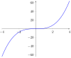
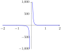
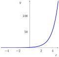
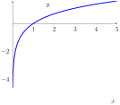
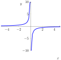
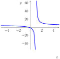
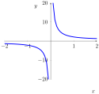
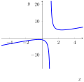
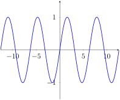
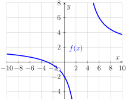

Consider the graph of the polynomial function \(f(x) = x^3\) . We want to think about what the long term behavior of this function might be. Which of the following best describes its behavior?

Figure22.The graph of \(x^3\text{.}\)
As \(x\) gets larger, the function \(x^3\) gets smaller and smaller.
As \(x\) gets more and more negative, the function \(x^3\) gets more and more negative.
As \(x\) gets more and more positive, the function \(x^3\) gets more and more negative.
As \(x\) gets smaller, the function \(x^3\) gets smaller and smaller.
Remark1.5.2.
We say that “the limit as \(x\) tends to negative infinity of \(x^3\) is negative infinity” and that “the limit as \(x\) tends to positive infinity of \(x^3\) is positive infinity.” In symbols, we write
Consider the graph of the rational function \(f(x) = 1/ x^3\) . We want to think about what the long term behavior of this function might be. Which of the following best describes its behavior?

Figure23.The graph of \(1/x^3\text{.}\)
As \(x\) tends to positive infinity, the function \(1/x^3\) tends to positive infinity
As \(x\) tends to negative infinity, the function \(1/x^3\) tends to 0
As \(x\) tends to positive infinity, the function \(1/x^3\) tends to negative infinity
As \(x\) tends to 0, the function \(1/x^3\) tends to 0
Definition1.5.4.
A function has a horizontal asymptote at \(y=b\) when
\begin{equation*}
\lim_{x\to +\infty} f(x) = b
\end{equation*}
or
\begin{equation*}
\lim_{x\to -\infty} f(x) = b
\end{equation*}
This means that we can make the output of \(f(x)\) as close as we want to \(b\text{,}\) as long as we take \(x\) a large enough positive number (\(x \to \infty\)) or a large enough negative number (\(x \to -\infty\)).
Remark1.5.5.
We say that the function \(1/x^3\) has horizontal asymptote y=0 because the limit as \(x\) tends to positive infinity of \(1/x^3\) is 0. Alternatively, we could also justify it by saying that the limit as \(x\) goes to negative infinity is 0.
Activity1.5.6.
Which of the following functions have horizontal asymptotes? Select all!
Figure24.A
Figure25.B
Figure26.C
Figure27.D
Figure28.E
Figure29.F
Activity1.5.7.
Recall that a rational function is a ratio of two polynomials. For any given rational function, what are all the possible behaviors as \(x\) tends to + or - infinity?
The only possible limit is \(0\)
The only possible limits are \(0\) or \(\pm \infty\)
The only possible limits are \(0\text{,}\)\(1\) or \(\pm \infty\)
The only possible limits are any constant number or \(\pm \infty\)
Activity1.5.8.
In this activity we will examine functions whose limit as \(x\) approaches positive and negative infinity is a nonzero constant.
(a)
Graph the following functions and consider their limits as \(x\) approaches positive and negative infinity. Which function(s) have a limit that is nonzero and constant? Find each of these limits.
Conjecture a rule for how to determine that a rational function has a nonzero constant limit as \(x\) approaches positive and negative infinity. Test your rule by creating a rational function whose limit as \(x \to \infty\) equals 3 and then check it graphically.
Activity1.5.9.
What about when the limit is not a nonzero constant? How do we recognize those? In this activity you will first conjecture the general behavior of rational functions and then test your conjectures.
(a)
Consider a rational function \(r(x) = \frac{p(x)}{q(x)}\text{.}\) Looking at the numerator \(p(x)\) and the denominator \(q(x)\text{,}\) when does the function \(r(x) \) have limit equal to 0 as \(x \to \infty? \)
When the ratio of the leading terms is a constant.
When the degree of the numerator is greater than the degree of the denominator.
When the degree of the numerator is less than the degree of the denominator.
When the degree of the numerator is equal to the degree of the denominator.
(b)
Consider a rational function \(r(x) = \frac{p(x)}{q(x)}\text{.}\) Looking at the numerator \(p(x)\) and the denominator \(q(x)\text{,}\) when does the function \(r(x) \) have limit approaching infinity as \(x \to \infty? \)
When the ratio of the leading terms is a constant.
When the degree of the numerator is greater than the degree of the denominator.
When the degree of the numerator is less than the degree of the denominator.
When the degree of the numerator is equal to the degree of the denominator.
(c)
Conjecture a rule for the each of the previous two parts of the activity. Test your rules by creating a rational function whose limit as \(x \to \infty\) equals 0 and another whose limit as \(x \to \infty\) is infinite. Then check them graphically.
What is your best guess for the limit as \(x\) goes to \(+ \infty \) of the function graphed below?

Figure30.A mysterious periodic function.
The limit is \(0\)
The limit is \(1\)
The limit is \(-1\)
The limit is \(+\infty\)
The limit DNE
Warning1.5.12.
For a periodic function, a function whose outputs repeat periodically, there is not one distinguished long term behavior, so the limit DNE. Notice that this is different from the limit being +infinity in which case the outputs have a clear behavior: they are getting larger and larger. Unfortunately, you will find in many cases that the notation DNE is used both for a limit equal to infinity and a limit that does not tend to one distinguished value. Beware!
The graph below represents the function \(f(x) = \displaystyle\frac{2(x+3)(x+1)}{x^2-2x-3}\text{.}\)

Figure31.The graph of \(f(x)\)
(a)
Find the horizontal asymptote of \(f(x) \text{.}\) First, guess it from the graph. Then, prove that your guess is right using algebra.
(b)
Use limit notation to describe the behavior of \(f(x)\) at its horizontal asymptotes.
(c)
Come up with the formula of a rational function that has horizontal asymptote \(y=3 \text{.}\)
(d)
What do you think is happening at \(x=-1\text{?}\) We will come back to this in the next section!
Note1.5.15.
An exponential function \(P(t) = a \, b^t\) exhibiting exponential decay will have the long term behavior \(P(t) \to 0\) as \(t \to \infty\text{.}\) If we shift the graph up by \(c\) units, we obtain the new function \(Q(t) = a \, b^t + c\text{,}\) with the long term behavior \(\displaymath\lim_{t \to \infty} Q(t) = c\text{.}\) A cooling object can be represented by the exponential decay model \(Q(t) = a \, b^t + c\text{.}\)
Activity1.5.16.
In this activity you will explore an exponential model for a cooling object.
Consider a cup of coffee initially at 100 degrees Fahrenheit. The said cup of coffee was forgotten this morning on the kitchen counter where the thermostat is set at 72 degrees Fahrenheit. From previous observations, we can assume that a cup of coffee looses 10 percent of its temperature each minute.
(a)
In the long run, what temperature do you expect the coffee to tend to? Write your observation with limit notation.
(b)
In the model \(Q(t) = a \, b^t +c\text{,}\) your previous answer gives you the value of one of the parameters in this model. Which one?
(c)
From the information given, we notice that the cup of coffee has decay rate of 10% or \(r = -0.1\text{.}\) When an exponential model has decay rate \(r\text{,}\) its exponential base \(b\) has value \(b=1+r\text{.}\) Use this to find the value of \(b\) for the exponential model described in this scenario.
(d)
Assume that the initial temperature corresponds to input \(t=0\text{.}\) Use the data about the initial temperature to find the value of the parameter \(a\) in the model \(Q(t) = a \, b^t + c\text{.}\)
(e)
You should have found that this scenario has exponential model \(Q(t) = 28 \, (0.9)^t + 72\text{.}\) If you go back to drink the cup of coffee 30 minutes after it was left on the counter, what temperature will the coffee have reached?